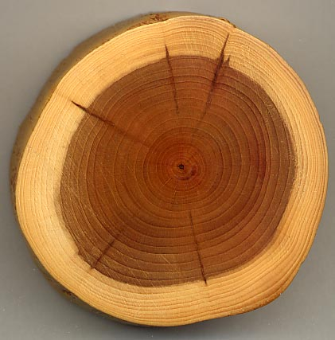

Fusta i els seus derivats¶
La fusta és una matèria primera que s’obté del maleter i de les branques dels arbres.
Índex de contingut:
Propietats de fusta¶
La fusta de diferents arbres té propietats diferents, però hi ha algunes propietats habituals a totes elles.
- ** duresa de fusta **
La duresa varia molt entre diferents boscos. La fusta de Balsa és molt suau i es pot ratllar amb molta facilitat. A l’altre extrem, la fusta de roure és una fusta molt dura.
La duresa de la majoria de fustes diàries és relativament suau en comparació amb altres materials com ara pedra, metalls o fins i tot plàstics.
- ** Resistència a la fusta mecànica **
La resistència mecànica varia molt segons l’orientació de la fusta. En direcció a les fibres, la fusta és molt més resistent i perdura aproximadament 1 o 2 kg per mil·límetre quadrat.
En el sentit perpendicular a les fibres, la fusta resisteix poc i es separa amb relativa facilitat. Per això, els taulers laminats es fabriquen amb les fibres d’un full en perpendicular a les fibres de la làmina següent, de manera que el tauler té resistència en tots els sentits.
Tot i que la seva resistència és inferior a la de l’acer o el formigó, amb fusta podeu fer cases, vaixells, mobles, terres, etc. Com a fet curiós, tots els edificis de Venècia estan recolzats per bigues de fusta sota l’aigua.
- ** Flexibilitat de la fusta **
- La fusta és un material força flexible. Això fa que sigui molt adequat fer pals de vaixell, arcs, parts corbes, etc.
- ** Densitat de fusta **
La fusta té una densitat similar a l’aigua (1kg per litre). La majoria de les fustes tenen una densitat inferior i suren a l’aigua, però alguns boscos i densitat més durs s’enfonsen a l’aigua.
La densitat de la fusta és lleugera, similar a la dels plàstics. En comparació, la densitat de metalls o pedra és molt més gran.
- ** Conductivitat de la fusta **
- La fusta és un mal conductor de calor i electricitat. Això fa que sigui càlid per tocar i que és un bon aïllant.
- ** Hygroscopicity of Wood **
És la capacitat d’absorbir l’aigua. En absorbir aigua, la fusta s’infla que ocupa més volum. Això pot provocar problemes. Per exemple, quan un terra de parquet es mulla, els taulers de fusta s’inflen i es corben.
- ** Oxidació de la fusta **
- Tot i que la fusta és molt resistent a l’oxidació, en condicions d’humitat es pot atacar per fongs que la degraden com a oxidació degradada als metalls. Per evitar -ho, se solen donar tractaments superficials amb olis, vernissos o resines.
- ** Propietats ecològiques de la fusta **
La fusta i els seus derivats són reciclables, biodegradables i no tòxics.
Tot i això, la fabricació de paper és un procés molt contaminant a causa dels processos químics necessaris per separar les fibres de cel·lulosa i blanquejar -les.
- ** Altres propietats de la fusta **
- La fusta no es pot fondre, ni és maleable ni dúctil. Per tant, la majoria de processos de fabricació es basen en processos per eliminar el material: tallar, Serra, perforar o remolcar la fusta.
Parts del tronc de l'arbre¶
- ** Crosta **
- És la part exterior del tronc. La seva funció és protegir les capes interiors.
- ** Sapwood **
- És la fusta més externa del tronc. És més jove, suau i més lleuger.
- ** Heartwood **
- És la fusta més interior del tronc. És més dur i fosc.

Tronc de Tejo en el qual es distingeix el Duramen de la Sapwood.¶
Obtenir fusta¶
- ** tala **
És el procés de tallar el tronc de l’arbre. Un cop tallat les branques més petites s’eliminen.
Vídeo: John Deere 1470G Harvester.
- ** Transport **
- Els troncs de cordó són transportats des del bosc al camió o per un riu fins a la serradora.
- ** Sawmill **
A la serradora s’elimina el còrtex del tronc i serveixen en forma de taules, taulons o llistons.
També podeu laminar els troncs amb una fulla per obtenir plaques de fusta.
Vídeo: Torno Laminor <https://www.youtube-nocokie.com/embed/in2su7ivmw8> __
- ** replantejar **
Perquè la fusta sigui un recurs renovable, cal substituir el mateix nombre d’arbres que s’han tallat.
Als països amb més consciència ecològica, es busca que les plantacions de Madderas siguin de diverses espècies per augmentar la resistència dels boscos contra les plagues i les sequeres com a conseqüència del canvi climàtic.
Tipus de fustes naturals¶
- ** Fustes tous **
Provenen principalment de coníferes.
Pi, avet, cedre, poppus, fusta de la bassa.
- ** Woods Hard **
Tenen una major densitat i duresa, per la qual cosa són més difícils de treballar.
Oak, Beech, Brown, Walnut, Eucalyptus, caoba.
Derivats de fusta¶
- ** Full de fusta **
La fusta la pot laminar tallant -la amb una fulla com si fes un bolígraf.
Aquestes làmines de fusta es poden utilitzar per cobrir altres derivats de fusta com ara aglomerat i donar la impressió superficial de la fusta natural.
- ** Preportat **
- És un tauler de fusta feta de rodanxes de fusta fina enganxades les unes a les altres com en un sandvitx. Les fibres de cada xapa de fusta es col·loquen perpendiculars a la làmina anterior per millorar la seva resistència mecànica i evitar que es combini amb la humitat.
- ** Agglomerate **
Està format per xips de fusta (serradures) enganxades amb una cua que les uneix entre ells.
La superfície de l’aglomerat sol estar coberta de làmines de fusta naturals o amb fulls de resina de plàstic de color per donar una aparença de fusta natural, granit, color uniforme, etc.
- ** dm o mdf **
Està format per fibres de fusta premsades, similars a les que s’utilitzen per fer cartró, unides per una cola de resina.
L’exemple més utilitzat a les cases són els fulls posteriors dels armaris.
- ** Cork **
És un material que s’obté de l’escorça d’un arbre, el roure de suro.
Es pot utilitzar per fer panells que tinguin una resposta molt bona al so a les sales insonoritzades. També s’utilitza en taps d’ampolles, panells de panells, etc.
- ** Paper **
- Està format per fibres molt primes de fusta, blanquejades amb oxigen o clor i pressionades en llençols fins.
- ** Cardboard **
El seu procés de fabricació és similar al del paper, però les fibres no són blanquejades. Normalment conté paper reciclat.
El cartró ondulat està format per diverses làmines de paper enganxades les unes a les altres, amb el full central ondulant.
Vídeo: El cartró ondulat.
Formes comercials¶
- ** Fusta massissa **
S’obtenen directament tallant el tronc de l’arbre.
** Llistes: ** Peces llargues amb una secció petita o circular de mida petita.
** Perfils i motllures: ** Secció llarga de la secció de les formes variades de mida petita.
** Talts: ** Parts grans i gruixudes entre 3mm i 25mm.
** Passos: ** Fulls de fusta amb un gruix inferior a 3 mil·límetres, que serveixen per cobrir fusta de menor qualitat, part posterior dels armaris i fons de calaix.
- ** derivats de fusta **
S’obtenen prement blocs, rodanxes, xips o fibres de fusta enganxada.
** Els taulers ** tenen grans dimensions (120cm x 240cm) i poc gruix. Es poden tallar en mides més petites segons els avions dels clients. Es poden fer de fusta contraplacada, aglomerat o fibres (MDF).
** Bobines de paper i cartró: ** Estan format per paper o cartró enrotllat en una gran bobina.